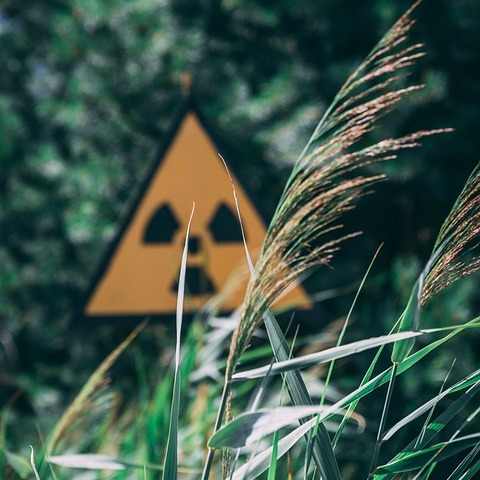
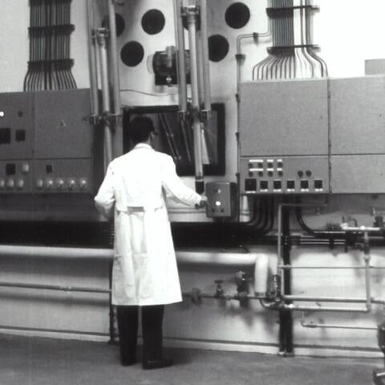
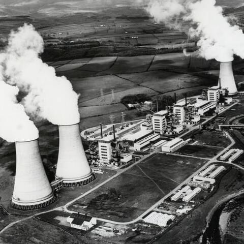
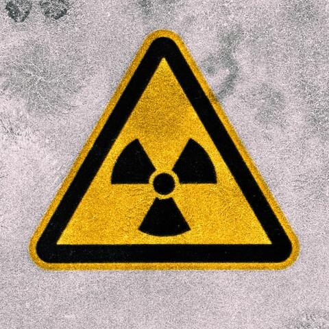
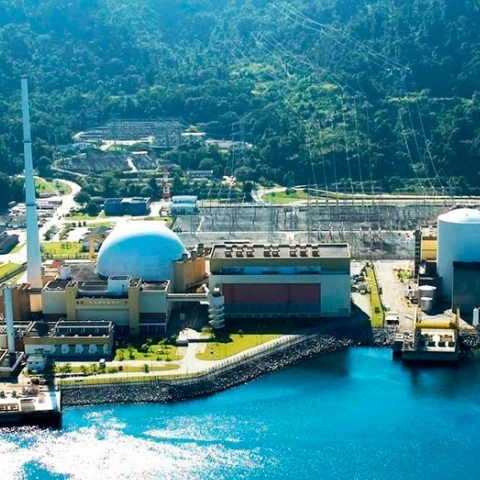

Acidentes Nucleares
O acidente de Chernobyl,na Usina V. I. Lenin, ocorreu na cidade de Pripyat, a cerca de 20 km da cidade de Chernobyl, na extinta União Soviética (atualmente corresponde ao norte do território ucraniano) em...
Leia mais →

Como funciona uma usina
O Urânio é um mineral utilizado nas Usinas Nucleares, sendo a fonte de energia dela.
Entretanto o urânio utilizado não é o natural, ele passa por um processo de
enriquecimento, já que o urânio...
Leia mais →

Debate sobre a energia nuclear
Quando se trata de energia nuclear comumente vem à mente casos como Chernobyl, o caso de Goiânia e várias coisas que são negativas a ela, mas já pararam para pensar o motivo...
Leia mais →

Escala Internacional de Acidentes Nucleares
A Escala Internacional de Acidentes Nucleares e radiológicos (INES – International Nuclear Event Scale) foi introduzida pela AIEA (Agência Internacional de Energia Atômica) no ano de 1990.
Leia mais →
Filmes que falam sobre a energia nuclear
É um filme estadunidense que conta de uma repórter e seu cinegrafista que presenciam um estranho acontecimento em uma usina nuclear da Califórnia...
Leia mais →

Usinas nucleares no Brasil
Município do Rio de Janeiro, e são chamadas de Angra 1 e Angra 2 e elas são responsáveis por basicamente 3% da energia consumida no país. Angra 1 começou...
Leia mais →